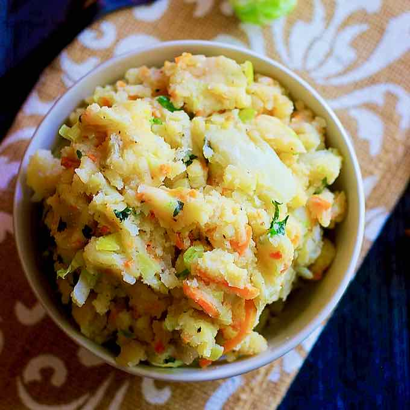

Stoemp

Mashed potatoes in Belgian style.
- Prep time: 10 min
- Cook time: 30 min
- Servings: 4
Ingredients:
- 500g potatoes
- 300g carrots
- 100g bacon
- 50g butter
- 100ml heavy cream
- ½ teaspoon ground nutmeg
Steps:
- Cut bacon into bits.
- Sauté bacon until well colored.
- Peel and dice into small chunks potatoes, peel and slice carrots.
- Boil for 20-25 minutes potatoes and carrots in salted water.
- Drain vegetables and mash with a fork, so that the texture remains slightly chunky.
- Mix with bacon bits, butter, cream, nutmeg, salt, pepper.